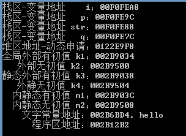
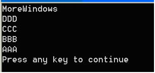

1. ¿Qué es static?
static es un modificador muy utilizado en C/C++; se usa para controlar el modo de almacenamiento y la visibilidad de las variables.
1.1 Introducción a static
Sabemos que para las variables definidas dentro de una función, cuando el programa llega a su definición, el compilador les asigna espacio en la pila. El espacio asignado en la pila por la función se libera cuando esta termina su ejecución. Esto plantea un problema: si se quiere conservar el valor de esta variable en la función hasta la siguiente llamada, ¿cómo lograrlo? El método más fácil de pensar es definirla como variable global, pero definir una variable global tiene muchos inconvenientes; el más evidente es que rompe el ámbito de acceso de esta variable (hace que la variable definida en la función no esté controlada únicamente por dicha función). La palabra clave static puede resolver bien este problema.
Además, en C++, cuando se necesita que un objeto de datos sirva a toda la clase y no a un objeto concreto, y al mismo tiempo se busca no romper la encapsulación de la clase, es decir, se requiere que este miembro esté oculto dentro de la clase y no sea visible desde fuera, se puede definir como dato estático.
1.2 Almacenamiento de datos estáticos
Área de almacenamiento global (estática): se divide en segmento DATA y segmento BSS. El segmento DATA (área global inicializada) almacena variables globales y estáticas inicializadas; el segmento BSS (área global no inicializada) almacena variables globales y estáticas no inicializadas. Se liberan automáticamente al finalizar la ejecución del programa. El segmento BSS se pone a cero automáticamente por el sistema antes de la ejecución del programa, por lo que las variables globales y estáticas no inicializadas ya son 0 antes de la ejecución. Las variables almacenadas en el área de datos estáticos se inicializan al inicio de la ejecución del programa, y es la única inicialización.
En C++, el mecanismo de implementación interna de static: los miembros de datos estáticos deben existir desde el inicio de la ejecución del programa. Debido a que las funciones se llaman durante la ejecución del programa, los miembros de datos estáticos no pueden asignar espacio ni inicializarse dentro de ninguna función.
Así, hay tres lugares posibles para su asignación de espacio: primero, el archivo de encabezado como interfaz externa de la clase, donde está la declaración de la clase; segundo, la implementación interna de la definición de la clase, donde están las definiciones de las funciones miembro; tercero, la declaración y definición de datos globales antes de la función main() de la aplicación.
Los miembros de datos estáticos necesitan asignar espacio realmente, por lo que no pueden definirse en la declaración de la clase (solo pueden declararse como miembros de datos). La declaración de la clase solo declara el "tamaño y especificaciones" de la clase, no realiza asignación de memoria real, por lo que escribir una definición en la declaración de la clase es un error. Tampoco pueden definirse fuera de la declaración de la clase en el archivo de encabezado, porque eso provocaría que se definan repetidamente en múltiples archivos fuente que usen la clase.
static se introduce para indicar al compilador que almacene las variables en el área de almacenamiento estático del programa en lugar del espacio de la pila. Los miembros de datos estáticos se inicializan en el orden en que aparecen sus definiciones. Tenga en cuenta que cuando los miembros estáticos están anidados, debe garantizarse que el miembro anidado ya esté inicializado. El orden de destrucción es el inverso al de inicialización.
Ventajas:Puede ahorrar memoria, porque es común a todos los objetos. Por lo tanto, para múltiples objetos, los miembros de datos estáticos se almacenan en un solo lugar y son compartidos por todos los objetos. El valor de un miembro de datos estático es el mismo para cada objeto, pero su valor se puede actualizar. Basta con actualizar el valor del miembro de datos estático una vez para garantizar que todos los objetos accedan al mismo valor actualizado, lo que puede mejorar la eficiencia temporal.
2. La función de static en C/C++
2.1 En resumen
- (1) Al modificar variables, la variable local estática modificada por static solo se inicializa una vez, y prolonga el ciclo de vida de la variable local, que no se libera hasta que el programa termina su ejecución.
- (2) Cuando static modifica una variable global, esta variable global solo puede accederse en el archivo actual, no en otros archivos, incluso con una declaración extern.
- (3) Si static modifica una función, esta función solo puede llamarse en el archivo actual, no puede ser llamada por otros archivos. Las variables modificadas por static se almacenan en el área de variables estáticas de la zona de datos global, incluidas las variables estáticas globales y las variables estáticas locales; todas asignan memoria en la zona de datos global. Al inicializarse, se inicializan automáticamente a 0.
- (4) Cuando no se desea que se libere, se puede usar static. Por ejemplo, para modificar un array almacenado en el espacio de pila dentro de una función. Si no se quiere que este array se libere al final de la llamada a la función, se puede usar static.
- (5) Considerando la seguridad de los datos (cuando el programa quiera usar variables globales, primero debería considerar usar static).
2.2 Variables estáticas y variables ordinarias
Las variables globales estáticas tienen las siguientes características:
- (1) Todas las variables estáticas asignan memoria en la zona de datos global, incluidas las variables locales estáticas que se mencionarán más adelante;
- (2) Las variables globales estáticas no inicializadas son inicializadas automáticamente a 0 por el programa (el valor de las variables automáticas declaradas dentro de una función es aleatorio a menos que se inicialicen explícitamente, mientras que las variables automáticas declaradas fuera de una función también se inicializan a 0);
- (3) Las variables globales estáticas son visibles en todo el archivo donde se declaran, pero invisibles fuera de él.
Ventajas:Las variables globales estáticas no pueden ser utilizadas por otros archivos; en otros archivos se pueden definir variables con el mismo nombre sin que se produzcan conflictos.
(1) Diferencia entre variables globales y variables globales estáticas
- 1) Las variables globales son aquellas que no se modifican explícitamente con static. Las variables globales tienen por defecto enlace externo, su alcance es todo el proyecto. Una variable global definida en un archivo puede usarse en otro archivo mediante la declaración extern con el nombre de la variable global.
- 2) Las variables globales estáticas son variables globales modificadas explícitamente con static; su alcance es el archivo donde se declara la variable. Otros archivos no pueden usarla incluso con declaración extern.
2.3 Las variables locales estáticas tienen las siguientes características:
- (1) La variable asigna memoria en la zona de datos global;
- (2) La variable local estática se inicializa por primera vez cuando el programa ejecuta la declaración de dicho objeto, es decir, las llamadas posteriores a la función no vuelven a inicializarla;
- (3) La variable local estática generalmente se inicializa en el lugar de la declaración; si no hay inicialización explícita, el programa la inicializa automáticamente a 0;
- (4) Permanece siempre en la zona de datos global hasta que finaliza la ejecución del programa. Pero su alcance es local; cuando termina la función o el bloque de sentencias que la define, su alcance también termina.
Generalmente, los programas almacenan los datos dinámicos recién creados en el montón (heap), y las variables automáticas dentro de las funciones se almacenan en la pila. Las variables automáticas generalmente liberan espacio al salir de la función; los datos estáticos (incluso las variables locales estáticas dentro de funciones) también se almacenan en la zona de datos global. Los datos en la zona de datos global no liberan espacio debido a la salida de la función.
Vea el siguiente ejemplo:
Ejemplo
El resultado de salida es el siguiente:

3. Uso de static
3.1 En C++
El uso más básico de la palabra clave static es:
- 1. Las variables modificadas por static pertenecen a la clase y pueden ser referenciadas directamente medianteNombreClase.nombreVariablesin necesidad de crear una instancia de la clase con new.
- 2. Los métodos modificados por static pertenecen a la clase y pueden ser referenciados directamente medianteNombreClase.nombreMétodosin necesidad de crear una instancia de la clase con new.
Las variables modificadas por static y los métodos modificados por static pertenecen en conjunto a los recursos estáticos de la clase, y son compartidos entre las instancias de la clase. En otras palabras, si cambia en un lugar, cambia en todas partes.
En C++, los miembros estáticos pertenecen a toda la clase y no a un objeto concreto; las variables miembro estáticas se almacenan una sola vez y son compartidas por todos los objetos. Por lo tanto, todos los objetos pueden compartirlas. Usar variables miembro estáticas para lograr el intercambio de datos entre múltiples objetos no rompe el principio de ocultación, garantiza la seguridad y también ahorra memoria.
La definición o declaración de un miembro estático debe incluir la palabra clave static. Los miembros estáticos se pueden usar mediante el operador de doble dos puntos, es decir:<NombreClase>::<NombreMiembroEstático>。
3.2 Relacionado con miembros estáticos de clase
Llamar a funciones miembro estáticas y no estáticas mediante el nombre de la clase:
Error:
'Point::init' : illegal call of non-static member function
Conclusión 1:No se puede llamar a una función miembro no estática de la clase mediante el nombre de la clase.
Llamar a funciones miembro estáticas y no estáticas a través de un objeto de la clase.
Compila correctamente.
Conclusión 2: Un objeto de la clase puede usar funciones miembro estáticas y no estáticas.
Usar miembros no estáticos de la clase dentro de una función miembro estática de la clase.
Error de compilación:
error C2597: illegal reference to data member 'Point::m_x' in a static member function
Porque la función miembro estática pertenece a toda la clase y ya se le ha asignado espacio antes de instanciar el objeto de la clase, mientras que los miembros no estáticos de la clase solo tienen espacio en memoria después de instanciar el objeto de la clase. Por lo tanto, esta llamada falla, como si se usara una variable antes de declararla.
Conclusión 3:En una función miembro estática no se puede hacer referencia a miembros no estáticos.
Usar miembros estáticos de la clase en funciones miembro no estáticas de la clase.
Compila correctamente.
Conclusión 4: Las funciones miembro no estáticas de la clase pueden llamar a funciones miembro estáticas, pero no al contrario.
Usar variables miembro estáticas de la clase.
按 Ctrl+F7La compilación no muestra errores, pero al presionar F7 para generar el programa EXE se produce un error de enlace.
error LNK2001: unresolved external symbol "private: static int Point::m_nPointCount" (?m_nPointCount@Point@@0HA)
Esto se debe a que las variables miembro estáticas de la clase deben inicializarse antes de usarse.
在 main()Añadir delante de la funciónint Point::m_nPointCount = 0;Luego compilar y enlazar sin errores; al ejecutar el programa se mostrará 1.
Conclusión 5: Las variables miembro estáticas de la clase deben inicializarse antes de usarse.
Resumen y reflexión:Los recursos estáticos pertenecen a la clase, pero existen independientemente de ella. Desde la perspectiva del mecanismo de carga de la clase J, los recursos estáticos se cargan cuando se inicializa la clase, mientras que los recursos no estáticos se cargan cuando se instancia el objeto de la clase. La inicialización de la clase ocurre antes de instanciar el objeto, por ejemploClass.forName("xxx")Método, es decir, se inicializa una clase, pero no se instancia el objeto; simplemente se cargan los recursos estáticos de esa clase. Por lo tanto, para los recursos estáticos, es imposible saber qué recursos no estáticos hay en una clase; pero para los recursos no estáticos es diferente, ya que se generan después de instanciar el objeto, por lo que pueden conocer todas estas cosas que pertenecen a la clase. Así que las respuestas a las preguntas anteriores son muy claras:
- 1) ¿Puede un método estático hacer referencia a recursos no estáticos? No. Las cosas que solo se generan al instanciar el objeto, para los recursos estáticos que ya existen después de la inicialización, simplemente no las conocen.
- 2) ¿Puede un método estático hacer referencia a recursos estáticos? Sí, porque todos se cargan durante la inicialización de la clase y se conocen entre sí.
- 3) ¿Puede un método no estático hacer referencia a recursos estáticos? Sí. Los métodos no estáticos son métodos de instancia, que se generan después de instanciar el objeto, por lo que conocen todo el contenido que pertenece a la clase.
（static modificando una clase:Esto se usa mucho menos que los usos anteriores. En general, static no puede modificar una clase. Si static va a modificar una clase, significa que esta clase es una clase interna estática (nota: static solo puede modificar una clase interna), es decir, una clase interna anónima. Por ejemplo, los cuatro mecanismos de rechazo en el grupo de hilos ThreadPoolExecutor: CallerRunsPolicy, AbortPolicy, DiscardPolicy y DiscardOldestPolicy son clases internas estáticas. El contenido relacionado con las clases internas estáticas se explicará específicamente al escribir sobre clases internas.)
3.3 Resumen:
- (1) En una función miembro estática no se pueden llamar miembros no estáticos.
- (2) En una función miembro no estática se pueden llamar miembros estáticos. Debido a que los miembros estáticos pertenecen a la propia clase y ya existen antes de que se cree el objeto de la clase, en una función miembro no estática se pueden llamar miembros estáticos.
- (3) Las variables miembro estáticas deben inicializarse antes de usarse (por ejemplo,int MyClass::m_nNumber = 0;), de lo contrario se producirá un error en el enlazador.
Resumen general: En una clase, static se puede usar para modificar miembros de datos estáticos y métodos miembro estáticos.
Miembro de datos estático
- (1) Los miembros de datos estáticos pueden lograr el intercambio de datos entre múltiples objetos. Son miembros compartidos por todos los objetos de la clase. Ocupan un solo espacio en memoria; si se cambia su valor, el valor de este miembro de datos en todos los objetos cambia.
- (2) A los miembros de datos estáticos se les asigna espacio cuando el programa comienza a ejecutarse y no se libera hasta que el programa termina. Siempre que se especifique un miembro de datos estático en la clase, se asignará espacio para él incluso si no se define ningún objeto.
- (3) Los miembros de datos estáticos pueden inicializarse, pero solo fuera del cuerpo de la clase. Si no se les asigna un valor inicial, el compilador los inicializará automáticamente a 0.
- (4) Los miembros de datos estáticos se pueden referenciar tanto por nombre de objeto como por nombre de clase.
Función miembro estática
- (1) Las funciones miembro estáticas, al igual que los miembros de datos estáticos, pertenecen a los miembros estáticos de la clase, no a los miembros del objeto.
- (2) Las funciones miembro no estáticas tienen el puntero this, mientras que las funciones miembro estáticas no tienen el puntero this.
- (3) Las funciones miembro estáticas se usan principalmente para acceder a miembros de datos estáticos y no pueden acceder a miembros no estáticos.
Para profundizar la comprensión, veamos otro ejemplo que utiliza variables miembro estáticas y funciones de la clase. Este ejemplo crea una clase Estudiante. Los objetos de cada clase Estudiante formarán una lista doblemente enlazada. Se usa una variable miembro estática para registrar el nodo principal de esta lista doblemente enlazada, y una función miembro estática para generar dicha lista.
Ejemplo
El programa generará:

Dirección original: https://www.cnblogs.com/33debug/p/7223869.html
Haz clic para compartir notas
<p style="font-size:14px;">¡La nota debe ser una extensión del contenido de este artículo!</p><br> <p style="font-size:12px;"><a href="../tougao.html" target="_blank">Para enviar un artículo, haz clic aquí</a></p> <p style="font-size:14px;"><a href="./runoob-user-test-intro.html" target="_blank">Cómo obtener el código de invitación de registro</a></p> <h3 class="text-muted"><i class="fa fa-info-circle" aria-hidden="true"></i> Antes de compartir notas, debes <a href=".." class="runoob-pop">iniciar sesión</a>!</h3> <p><a href="./runoob-user-test-intro.html" target="_blank">Cómo obtener el código de invitación de registro</a></p>